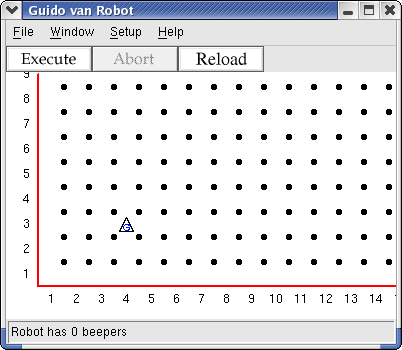
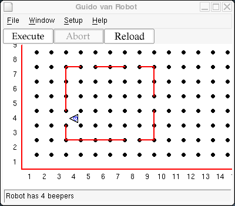
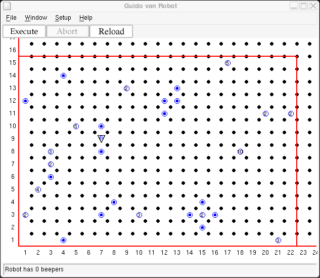

Programming a computer in a language like Python requires a precise sequencing of steps written in a language where details of syntax can be overwhelming for a beginner. Everything must be exactly right, and errors in just getting the program to run are frustrating. Often the output of beginning computer programs are text-based and uninteresting, at least to humans.
To get acquainted with the concepts of computing without getting bogged down in the syntax of a higher-level language such as Python, we begin by programming Guido van Robot. GvR is a teaching tool that presents the concepts in a visual way using a robot-language that is simple, yet powerful and extensible.
We program Guido, a simple robot that lives in a simple world. Because Guido and his world are a visual simulation, we can watch the effects of our programming statements. This activity is presented in a series of steps -- tutorials with accompanying mini-labs.
| Step 1 | Guido's First Steps | creating .wld and .gvr files |
| Step 2 | What's That Sound? | beepers |
| Step 3 | Turn, Turn, Turn | sequential instructions |
| Step 4 | Just Another Brick in the Wall | world file: walls |
| Step 5 | Do The Right Thing | user-generated instruction |
| Step 6 | Robotics Times | Project |
| Step 7 | Birthday Message | Project |
| Step 8 | Decisions | if statement |
| Step 9 | You Missed Some | do statement |
| Step 10 | Let's Dance | nested user instructions |
| Step 11 | Apple Pie or Cookies? | if..elif..else statement |
| Step 12 | Take Out the Trash | Conditional Looping |
| Step 13 | World Traveler | Project |
| Step 14 | It's Going to Rain | Project |
| Step 15 | A Job to Do | Project |
| Step 16 | Lunchbox | Project |
| Step 17 | Community Service Revisted | Project |
| Step 18 | Where to Go from Here... | Conclusion |
This series of Guido van Robot exercises was written by Roger Frank. Comments and suggestions about these lessons should be sent to Jeffrey Elkner, who converted them from Roger's Karel the Robot originals and who currently maintains them.
The Guido van Robot programming language is descended from two parent languages: Karel the Robot and Python. Karel the Robot was introduced by Richard Pattis in his book Karel the Robot: A Gentle Introduction to the Art of Programming with Pascal, John Wiley & Sons, Inc., 1981. Python is the creation of Guido van Rossum and members of the Python community. Information on Python can be found at: http://www.python.org
GvR was developed by high school computer science students at Yorktown High School in Arlington, VA, under guidance of mentor Steve Howell.
Guido van Robot can face in one of four directions, north, east, south, and west. He turns only 90 degrees at a time, so he can't face northeast, for instance. In Guido's world, streets run east-west, and are numbered starting at 1. There are no zero or negative street numbers. Avenues run north-south, and are also numbered starting at 1, with no zero or negative avenue numbers. At the intersection of a street and avenue is a corner. Guido moves from one corner to to the next in a single movement. Because he can only face in one of four directions, when he moves he changes his location by one avenue, or by one street, but not both! In this step we will create our first world, place Guido van Robot, and have the little guy take his first few steps.
Create a file step01.wld with this line:
Robot 4 3 N 0
This creates a world with Guido at 4th Avenue and 3rd Street, facing North. It should look like this:

There are many intersections where Guido can be in this world, since there are no walls other than those at the edge of the world. Remember, in Guido's world, an "avenue" runs north and south and a "street" run east and west.
Now create your first GvR program, calling it step01.gvr
move move move move turnoff
The instructions to Guido will be to move four spaces and then to turn off. Four small steps for a robot, one giant leap... never mind. Note that each command is on its own line.
Now load the world (.wld file) and the program (.gvr file) into GvR and test the code provided.
Make a world that has Guido start facing East in the lower left corner. Have him take three steps and turn off.
Hint: you may have to experiment with the numbers and letter after the word Robot in the world definition file to place him and face him facing the specified direction.
You discovered that the initial robot placement was of the form:
Robot 1 2 N 0
where the numbers are:
row column initial direction (N, W, S, or E) number of beepers.
Beepers? What are they? A robot can carry beepers, which are little sound devices Guido can hear. Guido can pick them up or put them down, all at your command. A beeper is a device that Guido can hear only when it's located on the same corner he's on. Guido has a beeper-bag he can use to carry beepers he picks up. He can also take beepers out of the bag and place them on the corner he occupies. You specify the initial number of beepers in your world file.
The commands to work with beepers are included in the basic robot commands you will explore. The complete list is:
move turnleft pickbeeper putbeeper turnoff
Put a robot with four beepers at the corner of 1st Avenue and 5th Street facing east. He should go two blocks east, drop one beeper, and then continue going one block and dropping a beeper at each intersection until he is out of beepers. Then he should take one more step and then turn off. When he has finished, the display should look like this:
If Guido could only move straight ahead, he would be sad since he
could never go home. The robot designers were caught in a budget crunch
right when they were making the steering mechanism. They only gave him
the ability to turn left. Staying at the same intersection, Guido can
rotate counter-clockwise, turning left to face a different direction.
The command for this is, not surprisingly, turnleft.
To see how this works, start Guido at the lower left corner facing East. Have him take three steps, turn left, three more, turn left, and so on until he is back at the starting point, facing East once again.
You can now program Guido to move around, pick up beepers, and drop
them off anywhere in his world. To make his world more interesting, we
will add walls to the world file that Guido will have to avoid. If
Guido is about to run into a wall, he does an error shut-off and your
program stops. This behavior is built-in to the robot. If he is asked
to do anything he cannot do, he shuts down. For example, if you tell
him to pick up a beeper that isn't there, he shuts off. The same goes
for put_beeper -- he shuts off if he doesn't have any in
his beeper-bag. So be careful and don't ask the robot to go into a
wall!
Here is an example of a world file with walls:
Robot 1 5 E 1 Wall 2 4 N Wall 2 4 E Wall 3 4 E Wall 4 4 N 2 Wall 2 5 N Wall 2 6 E Wall 3 6 E Wall 4 5 N 2
The format of a Wall descriptor is:
1st number: avenue 2nd number: street 3rd number: intersection blocked to (N)orth, (S)outh, (E)ast, or (W)est 4th number: (optional) wall length (extending East or North)
Using this world file, GVR's graphical display starts like this:

Modify the world file to change Guido's world such that his path is completely enclosed as shown in this diagram.

The default length of a wall section is one block, but you can use
an optional 4th number to make the wall section as long as you wish.
Lengths always extend in either the North or East direction. That means
there are two ways to describe a given section of wall. The longest
section of wall in the example above could be written as either
Wall 3 7 N 4 or Wall 3 8 S 4.
You will find it much easier if you use a piece of grid paper to sketch the world and then mark the intersections and walls' positions.
Put a robot with one beeper at the corner of 1st Avenue and 5th Street facing east as shown in the example world. In your program, he should go two blocks east, drop the beeper, and continue three blocks ahead. Facing a wall, he should turn left, go two blocks north, then three blocks west, then two south back to where he dropped the beeper. Then he picks it up and carries it three blocks south, drops it again, goes one more block and turns off.
To keep manufacturing costs down, the factory only built gears in Guido to move forward and to turn left. I read in the instruction manual that Guido has the ability to learn to do other things. For example, if Guido turns left three times, he will be facing right. But you as the robot programmer need to tell Guido how to do this.
We do this by defining a new instruction turnright as a
series of other instructions, specifically three turnleft
instructions. The definition looks like this:
define turnright:
turnleft
turnleft
turnleft
This is an example of a compound statement, which means it
is made up of two parts. The first part consists of define
followed by the name of the instruction you are defining, followed by a
colon (:). The second part consists of one or more
instructions indented the same number of spaces. See if you can figure
out what this complete program does.
define turnright:
turnleft
turnleft
turnleft
move
turnright
move
turnright
move
turnright
move
turnright
turnoff
The three turnleft instructions make up what is called a block of code, several instructions acting together as one. All GvR programs end with a turnoff instruction.
You should be able to "hand trace" the operation of this program to discover that Guido will walk in a small square, returning to his starting position.
Once you have defined a new instruction, you can use that
instruction as if it were built-in to GvR. Define an instruction
backup that makes Guido back up one block, leaving him facing in
the same direction. Then use backup in a a complete
program that has Guido start at the corner of Second Street and Third
avenue, move three blocks north, backup one
block, turnright, and then move two blocks
east.
Every day, Guido is awakened by the sound of the Robotics Times
newspaper hitting the front porch. Guido wants to stay current on news
about robotics, so he goes out and gets the paper each morning. Here is
a picture showing Guido asleep when the newspaper, represented by a
beeper, hits the porch. Write a program including your turnright
instruction and a new instruction, turnaround, to have him
go and get the newspaper and return to bed, where he likes to read.
You also need to place the beeper, as shown, in the world. The
second line in the
step06.wld file, Beepers 4 4 1, is used to place a
beeper. The first two numbers are the location and the last is how many
beepers are placed at that intersection.

Have Guido start in the position shown facing West. Make him get the beeper and then return to the same place, facing the same direction as he started.
Guido has just turned 18 and wants to let everyone in the universe
to know it. Since he cannot talk, he can only write the number eighteen
using beepers. Guido is a robot and only knows binary, so 18 in decimal
is represented as 10010.
Define these new instructions:
drawone to draw a numeral 1 in beepersdrawzero to draw a numeral 0 in beepers Use those instructions in a GvR program to create his birthday
message. Each instruction should properly position and orient Guido for
the next digit. The main program should use the drawone
and drawzero and instructions to make a binary 18.
When the program starts, the display should look exactly like this:

When he is done, the display should look exactly like this:

When Guido was a teenager, he was a bit rebellious. His parents had always told him every little thing to do: every turn to make and every step to take. He finally proclaimed "I can make my own decisions!" and went on to explain to his parents how to talk to him to have that capability.
He explained about boolean expressions, which could be only true or false. Guido would do different things depending on if some condition were true or false. Here was an example he gave:
if next_to_a_beeper:
pickbeeper
Guido has the ability to sense his world and to act accordingly. "Golly, you're growing up fast!" proclaimed his parents. They asked what things Guido could sense, and he provided this list:
| front_is_clear | True if there is no wall directly in front of Guido. False if there is. |
| front_is_blocked | True if there is a wall directly in front of Guido. False otherwise. |
| left_is_clear | True if there is no wall immediately to Guido's left. False if there is. |
| left_is_blocked | True if there is a wall immediately to Guido's left. False otherwise. |
| right_is_clear | True if there is no wall immediately to Guido's right. False if there is. |
| right_is_blocked | True if there is a wall immediately to Guido's right. False otherwise. |
| next_to_a_beeper | True if Guido is standing at an intersection that has a beeper. False otherwise. |
| not_next_to_a_beeper | True if there is not beeper at the current intersection. False if there is a beeper at the current intersection. |
| any_beepers_in_beeper_bag | True if there is at least one beeper in Guido's beeper bag. False if the beeper bag is empty. |
| no_beepers_in_beeper_bag | True if Karel's beeper bag is empty. False if there is at least one beeper in the beeper bag. |
| facing_north | True if Guido is facing north. False otherwise. |
| not_facing_north | True if Guido is not facing north. False if he is facing north. |
| facing_south | True if Guido is facing south. False otherwise. |
| not_facing_south | True if Guido is not facing south. False if he is facing south. |
| facing_east | True if Guido is facing east. False otherwise. |
| not_facing_east | True if Guido is not facing east. False if he is facing east. |
| facing_west | True if Guido is facing west. False otherwise. |
| not_facing_west | True if Guido is not facing west. False if he is facing west. |
Guido has not completed his community service to graduate from high school, so he is assigned to pick up trash along 2nd Street. Construct a world that has beepers spreadout along 2nd Street between 1st Avenue and the wall on the East corner of 12th Avenue. There can only be one beeper at any given corner, but a corner may or may not have a beeper on it. Guido should start at 1st Avenue and 2nd Street facing East.
A starting world would look something like this:

Have Guido go down 2nd Street, picking up all beepers he finds. Remember if there isn't a beeper at an intersection and you ask Guido to pick one up, he will complain and shutdown. Use one of the tests from the table above to make a decision whether there is a beeper available to pick up. After he gets to 12th Street, he should take all the beepers with him back to his starting position, face East again, and turnoff.
With the starting position above things should end up like this:

Recently, you wrote a program to have Guido go down 2nd Street and
pick up trash. You probably wrote code that used an if
statement ("if trash is here, pick it up") followed by a move
statement. Then you copied and pasted that code until you had enough
copies of it so Guido would go all the way down 2nd Street, picking up
all the trash.
There is a better way to do a group of statements over and over
again: the do instruction. The do instruction
allows you to repeat a set of actions a given number of times. For
instance,
do 5:
move
moves Guido 5 intersections forward. If you want to repeat multiple actions, group them together by indenting the instructions the same number of spaces:
do 5:
putbeeper
move
Using the same number of spaces to indent is mandatory if you want to repeat multiple actions. If you mistakenly write
do 5:
putbeeper
move
This code would put 5 beepers at one place and then move forward just one intersection. That's probably not what you wanted to happen. Be careful to keep indentation the same to keep groups of instructions together as one block.
Guido is smarter now and knows about the iterate statement. He is assigned once again to pick up trash along Second Street. Rewrite your solution to the previous assignment using Guido's new found power.
Here is a project that combines the do statement with a
user-defined instruction that uses another user-defined instruction.
The user-defined instruction is one to turn around. It is called by
another user-defined instruction that does one sequence of dance steps
described below. The sequence is repeated (or iterated) four times.
Guido lives in Colorado, where country music is popular. He would like you to teach him how to line dance. Line dancing is a series of steps, up and back, with turns and rotations, with each sequence ending facing in a different direction. If the line dancing pattern is repeated, eventually the dancer will end up at the starting place.
The line dance Guido wants to learn is like this. From the starting position, take two steps forward, turn around, then three steps back. Then three times: turn right, step. This puts Guido back at his starting spot, but facing in a different direction. Repeat this basic step pattern four times to let Guido dance and have some fun.
You already know about the if statement. You use it to
make a decision, as in if next to a beeper, pick it up.
Sometimes you have a more complicated decision to make. Guido likes
apple pie, but his Mom doesn't always have it available. She does have
cookies all the time, though. He wants to make a statement like this:
"Mom, I'd like some apple pie, but if you don't have it, then I'd like
a cookie." You can use the if...else... statement to allow
this two-way kind of decision.
It's like the if statement, but we add the optional
else part, providing a different course of action if the if
condition is not met.
The form of the conditional instruction with an else
clause is:
if test-condition:
instruction
else:
other-instruction
where instruction can be either a simple instruction (like "move") or an instruction block. Code to pick up a beeper or else just move on could be written as
if next-to-a-beeper:
pickbeeper
move
else:
move
Remember the else part is optional. Use it if it makes
sense.
In this project, Guido is going to circumnavigate a bounded world. He does not know the dimensions of the world (but you do, since you will create it). What he does know is that there is a beeper marking every corner of the world except the one where he starts.
Guido starts facing East in the lower left corner. If he's not next
to a beeper, he moves forward, otherwise he picks up the beeper, turns
left and moves. Create a world where it will take exactly 32 moves to
circumnavigate. You can choose the dimensions, but don't tell Guido!
Put beepers in three of the corners (southeast, northeast, northwest).
Then use a do statement (32 times) and an if...else
statement to go around the world.
Your starting world should look somthing like this, though the dimensions may differ:

The do instruction lets Guido do an action more than
once, but it has a limitation: you must know in advance how many times
the action should be executed. If you are at an intersection and you
need to pick up several beepers there but you don't know how many there
are, you cannot use a do statement. The while
statement can work in this situation.
The general format of the while instruction is
while test-condition-is-true:
action
where test-condition-is-true is some conditional that
evaluates to either true or false, and action
is either a single command (like move;) or a sequence of
commands in a block. As long as the tested condition is true, the
action will be performed. Thus while is similar to
do except that where do specifies a number of times
to execute an instruction, while specifies a test
condition. As long as the test condition is true, the
instructions will be executed over and over.
For example, to pick up a stack of beepers you could write
while next-to-a-beeper:
pickbeeper
This says that as long as there are beepers at this intersection, pick one up and check again. The result will be that there won't be any beepers at the current intersection. They will all be in Guido's beeper bag.
Writing a while loop is tricky; there are many details
to get right. The general steps are
while opposite condition:
...statements here...
Watch out for infinite loops, that is, loops that never terminate.
It's Monday morning, again. Before he goes to school, Guido has to take out the trash. He's not sure how many bags of trash there are (represented by beeper bags), but he knows they are in the corner of the room as shown in this world view:

He needs to pick up all the trash and put it in the dumpster in one
trip. Use one or more while statements to instruct Guido
to take out the trash. After depositing the trash, have Guido step back
to see that the trash is properly in the dumpster.
Guido wants to explore his world again. Last time, he picked up the beepers at the corners of his rectangular, bounded world. He also new how many steps it would take him to complete the journey. This time he will need to rely on detecting the walls around him to make the decision as to which way to turn.
Since he won't know the the size of his world in advance, he will not know how many steps it will take to get home. To solve this problem, he will drop a beeper at his starting point. Knowing there are no other beepers in the world, he will continue his journey until he is home. He knows he's home when he finds his beeper again.
Guido starts facing East in the lower left corner of a rectangular,
bounded world with one beeper in his beeper-bag. The world is of
unknown size - your choice. He starts on his journey and continues
until he is home. Use a while statement (looking for his
home beeper) and an if...else to have him complete his
adventure. Note: Guido cannot use a do statement at all,
since he has no idea of the dimensions of the world.
Guido's world has become a lot more interesting. No longer a simple rectangle, Guido now finds himself inside a polygon. If you haven't finished Geometry yet, a polygon is a closed geometric figure made up of line segments joining end to end. A polygon world for Guido might look something like this:

Your mission is get Guido to circumnavigate his new polygonal world. He should once again drop a beeper at his starting position and continue walking along the boarder of his world until he finds the beeper again. This time staying along the wall this time wil be trickier, but that's the challenge.
Guido is capable of doing more complex tasks, even when the world he lives in is not well understood. Guido must be able to achieve a goal by testing his environment and, based on those tests, doing some action. The steps Guido would take to solve a problem are called an algorithm.
Before writing a GvR program, the programmer needs to understand the algorithm. Then it can be coded, combined with an appropriate world, and tested. Think of the simple but powerful equation Algorithms + Data Structures = Programs.
In this lesson, the data structure is a world describing Guido's house. Guido is standing by the only door looking out. He sees a storm coming and decides to close all the windows in the house. First he closes the door by depositing a beeper where he stands. Then he will close the windows by depositing a beeper in each window (represented by wall openings). He loves storms, so after closing the windows, he will step outside to watch. Here is the initial world for this scenario.

You need to figure out the algorithm for this and code it, as well as generate the world. Guido hasn't lived in this house very long, so he is not sure exactly where the windows are. You cannot hard code a number of steps to get to a window -- instead, Guido must check for an open window as he walks around the inside perimeter of his house. As for any algorithm, you must also be sure the task will complete. For example, how does Guido know he is back at the door?
The final world in this scenario should look like this:

You have learned a lot about programming Guido. Congratulations! What you may not realize is that you have learned a lot about programming in any language. Most programs are a sequence of steps, interspersed with conditional decisions and groups of instructions that repeat. All of the projects have been successively more complex.
Implementing the solutions to the assignments so far has required a little more thought at each step. You understand the question and the desired result, but it's not immediately clear sometimes how to get it done. You should have realized that the way you would do it if you were Guido is often the way Guido would do it, using the instructions available.
Often, then, it's best to figure out how you would accomplish a task. Write the steps down in your own words with pencil and paper. This is sometimes called pseudocode because it isn't really instructions that Guido could use. But it helps you understand what needs to happen. Then you code it -- write the real instructions -- to create a GvR program.
Be sure to think this assignment through before you start coding. First figure out the algorithm, or sequence of steps, required. Then, looking at the sample world, simulate in your mind the execution of the program you are going to write. If it does what you expect, then and only then should you start coding.
Guido's Dad is a farmer. When Guido is not doing his homework, he helps in the field. Today he has to harvest the crop. The field always has 6 rows and 6 columns, but the crop did not grow in all the locations, as shown. Create a world with a mostly populated 6x6 field in the middle as shown.

Harvest the crop using a nested iterate statement - one or more iterate statements within an iterate statement - to perform the harvesting operation. In pseudocode, this would be something like:
iterate six times
go across, harvesting beepers
go back to left edge
go up one
stop
but the "go across, harvesting beepers" is an iteration itself:
iterate six times
iterate six times
go one to the right
harvest if possible
go back to left edge
go up one
stop
Note that pseudocode is not GvR code but a description of the algorithm in code-like structure. In this form, curly braces indicate a block of code that should be done together. Once the pseudocode is written, turn it into Karel code, compile it, and execute it to complete this assignment.
Here is a sample world file for this project, to save you some typing:
Robot 2 2 E 0 Beepers 3 2 1 Beepers 4 2 1 Beepers 5 2 1 Beepers 6 2 1 Beepers 7 2 1 Beepers 8 2 1 Beepers 4 3 1 Beepers 5 3 1 Beepers 6 3 1 Beepers 7 3 1 Beepers 8 3 1 Beepers 3 4 1 Beepers 4 4 1 Beepers 5 4 1 Beepers 6 4 1 Beepers 7 4 1 Beepers 8 4 1 Beepers 3 5 1 Beepers 4 5 1 Beepers 5 5 1 Beepers 8 5 1 Beepers 3 6 1 Beepers 5 6 1 Beepers 6 6 1 Beepers 7 6 1 Beepers 8 6 1 Beepers 3 7 1 Beepers 4 7 1 Beepers 5 7 1 Beepers 6 7 1 Beepers 7 7 1 Beepers 8 7 1
Congratulations! If you are here, you are probably ahead of most of your classmates, and have done an excellent job programming Guido. Your classmates need a little more time to catch up, and you are ready for an extra challenge.
As you begin this project, you may want to go back and re-read the Overview from Step 15, about planning your work on paper before coding it. I'll help you out with the algorithm, but I suggest that you pseudocode it and walk through it in your head before writing your program.
Guido has lost his lunchbox. He was playing in a maze and set it down and then wandered around. Now he is hungry. Luckily he left a beeper in his lunchbox. His situation looks like this:

Write a program to help Guido find his lunchbox. The secret is to
have Guido follow along the right edge of the maze, turning right if he
can, or straight ahead if he can't, or turning left as a last resort.
Write a program using an if..elif..else statement so Guido
can eat his lunch.
By the way, if you think you've solved this problem before, you are right ;-)
Guido learned a lot from the community service project he did back in step 8 . Motivated to give even more to his community, he has volunteered to pick up all the trash in Central Park.
The park is represented by a bounded rectangular area of unknown dimensions. Guido starts out in a random place in the park. Trash (represented by beepers) is spread throughout the park. Neither the amount nor the location of the trash is known at the start of the cleanup. Several pieces of trash can be at the same location. Guido's job is to pick up all the trash in the park and deposit it at the north-east corner of the park. He should then go to the south-west corner of the park facing north and turn himself off for some well deserved rest under a tree while he waits for his ride home.
A sample world for this problem might look something like this:

Guido is starting to realize that there are some things he cannot do. In the projects where Guido traveled, he had no memory of how big the world was. He has no way to keep track of a count. He tried to tell his parents about the journey but when they asked How far did you go? he didn't know. In the rain project where Guido had to close the windows, he had no way to remember where he started, at the door. He had to leave a beeper there to know when he had gone all around the house.
What Guido would like is a way to remember things. He read in a computer programming book about a part of a program called a variable that could be used to store numbers or letters or even words. Variables can hold a number value and that value can be changed. If he had a variable, he could increase the value in his variable by one for each step and know how many steps he had taken. If he had a two variables, he could store the street and the avenue where he stood at the door in the rain project and wouldn't have needed to drop a beeper there.
Alas, Guido does not have variables. Sadly, he knows he never will. He has heard rumors about other programming languages, such as Python, which have all of his capabilities and much more, including variables and the ability to listen and speak (input and output instructions) and even the ability to create whole new types of robots (object oriented programming and inheritance).
Its time to say goodbye to Guido and his world. He will wait patiently for the next class of students while you move on and learn more about programming as you continue your journey in Computer Science.
move
turnleft
pickbeeper
putbeeper
turnoff
Each Guido van Robot instruction must be on a separate line. A
sequence of one or more Guido van Robot instructions that are all
indented the same number of spaces compose a block of
code. <instruction> refers to any of the five primitive
instructions above, the conditional branching or iteration instructions
below, or a user defined instruction.
<instruction>
<instruction>
...
<instruction>
Conditional branching refers to the ability of a
program to alter it's flow of execution based on the
result of the evaluation of a conditional. The three
types of conditional branching instructions in Guido van Robot are
if and if/else and if/elif/else.
<test> refers to one of the eighteen conditionals above.
if <test>:
<block>
if <test>:
<block>
else:
<block>
if <test>:
<block>
elif <test>:
<block>
...
elif <test>:
<block>
else:
<block>
GvR has eighteen built-in tests that are divided into three groups: the first six are wall tests, the next four are beeper tests, and the last eight are compass tests:
front_is_clear
front_is_blocked
left_is_clear
left_is_blocked
right_is_clear
right_is_blocked
next_to_a_beeper
not_next_to_a_beeper
any_beepers_in_beeper_bag
no_beepers_in_beeper_bag
facing_north
not_facing_north
facing_south
not_facing_south
facing_east
not_facing_east
facing_west
not_facing_west
Iteration refers to the ability of a program to
repeate an instruction (or block of instructions) over and over until
some condition is met. The two types of iteration instructions are the
do and while instructions.
<positive_number> must be an integer greater than 0.
do <positive_number>:
<block>
while <test>:
<block>
New instructions can be created for Guido van Robot using the
define statement. <new_name> can be any sequence
of letters or digits as long as it begins with a letter and is not
already used as an instruction. Letters for Guido van
Robot are A..Z, a..z, and the underscore (_) character. Guido van Robot
is case sensitive, so TurnRight, turnright, and turnRight are all
different names.
define <new_name>:
<block>
Execution of a GvR program ends with the turnoff
instruction. Any program which reaches the end of its instruction
sequence without encountering turnoff is considered in
error. Thus the simplest GvR program is:
turnoff
Given the following world:
The following program will make Guido follow the right wall until he encouters a beeper:
define turnright:
do 3:
turnleft
define follow_right_wall:
if right_is_clear:
turnright
move
elif front_is_clear:
move
else:
turnleft
while not_next_to_a_beeper:
follow_right_wall
turnoff
Copyright © 2004 Jeffrey Elkner